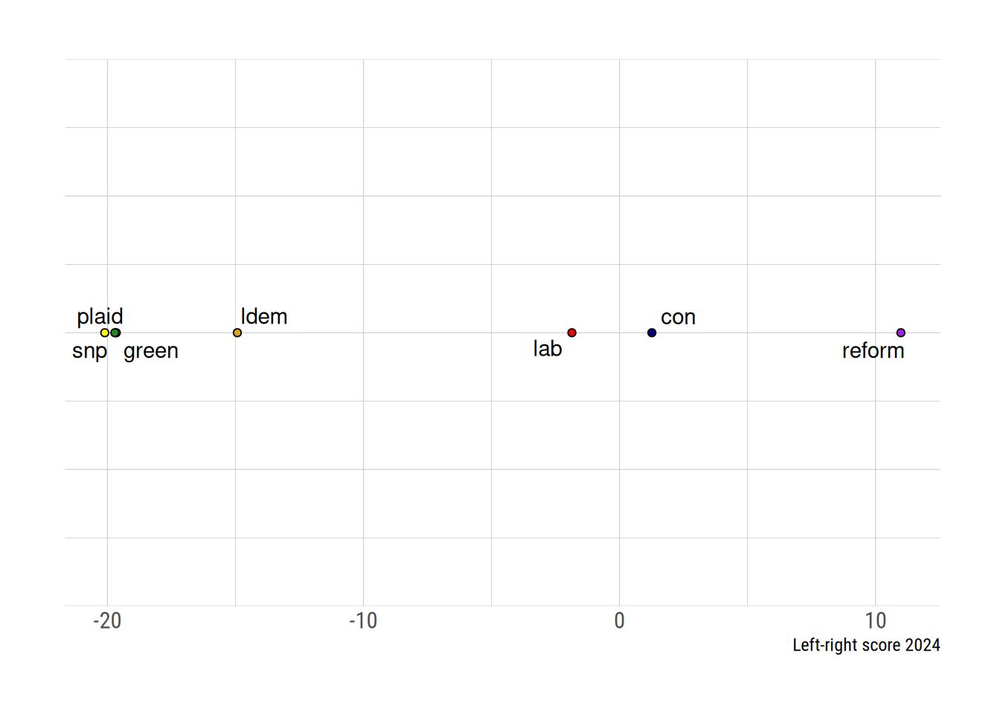
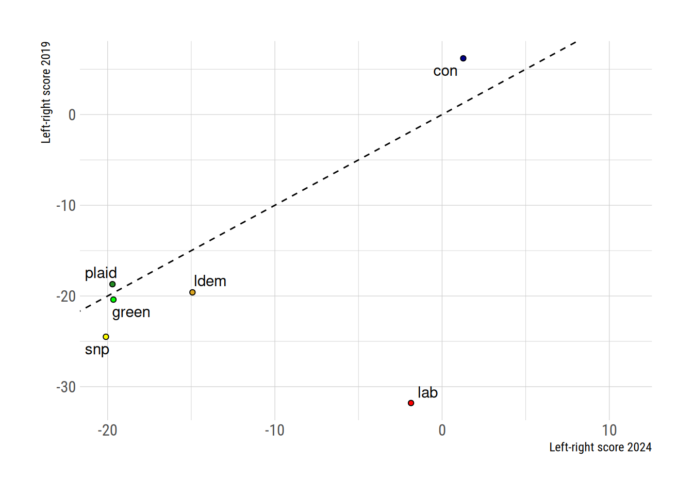
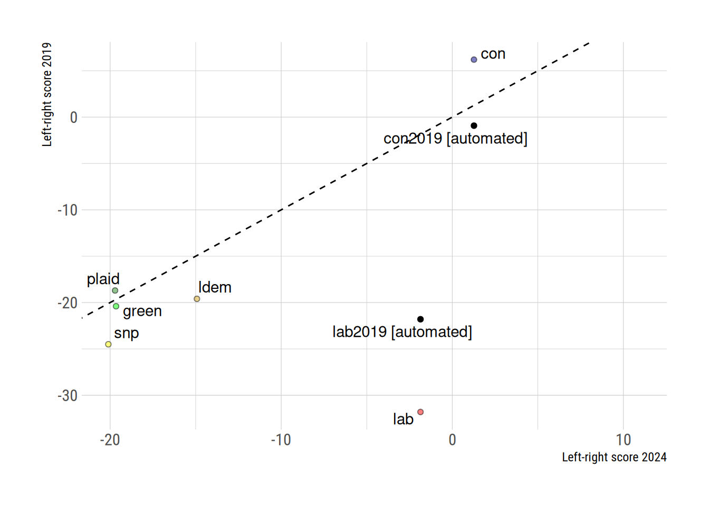

| Topic | Proportion |
|---|---|
| 504 - Welfare State Expansion | 0.1200652 |
| 605 - Law and Order: Positive | 0.0934960 |
| 305 - Political Authority | 0.0678734 |
| 411 - Technology and Infrastructure | 0.0569023 |
| 503 - Equality: Positive | 0.0545345 |
| 506 - Education Expansion | 0.0461089 |
| 301 - Federalism | 0.0371837 |
| 501 - Environmental Protection: Positive | 0.0366665 |
| 403 - Market Regulation | 0.0360994 |
| 701 - Labour Groups: Positive | 0.0331945 |
How left- or right-wing are parties’ 2024 manifestos?
parties
code
language
Roughly two weeks ago most of the parties released their 2024 general election manifestos.
Manifestos are a key source of information about parties’ priorities. They allow us to form expectations about what future governments will do, and allow us to test whether governments did in fact deliver what was promised by the party or parties making up government.
Manifestos are most used in political science as the basis for inferring parties’ positions on a left-right scale, whether that is on the basis of proportions of “right” and “left-wing” (quasi-)sentences, or some more complicated transformation of those counts.
Placing parties on a left-right scale on the basis of their manifesto usually involves coded parts of that sentence in different pre-defined categories. This work can take a long time if performed by humans. Recently it’s become possible to carry out this coding task automatically using large language models. The Manifesto Project itself has fine-tuned a large language model to categorize manifestos.
In this post, I use that LLM to position the parties on the left-right scale. I’m not the first to do this – Kevin Farnsworth has done the same thing – but I will be sharing all of my materials in case it’s of use to people. My emphasis is on sharing a first approximation rather than a finished product: if I were using this for an academic article I would want to spend longer cleaning the texts and checking the sentence splitting was working properly.
What did the parties talk most about?
Our first pass at the data has to involve the different Manifesto Project categories themselves. If we can’t understand the distribution of text across topic codes, we can’t understand anything built on those codes.
With that in mind, here’s the proportion of sentences (or things recognized as sentences by the tidytext package) belonging to the top ten topic codes, in the Labour manifesto.
The top entry – welfare state expansion – is perhaps unsurprising to see in the manifesto of a nominally left-wing party. What might be more surprising are that “law and order: positive” and “political authority” are second and third. These two codes are often taken to be (culturally or generally) “right-wing” codes. Let’s see some sample sentences coded as “law and order: positive” (more accurately: sentences for which “law and order: positive” had the highest probability of membership):
Labour will restore neighbourhood policing with thousands of extra officers, and we will equip officers with the powers they need.
- Labour will end the practice of empty warnings by ensuring knife carrying triggers rapid intervention and tough consequences.
- Labour will stop the chaos that lets too many criminals act with impunity, turn the page with stronger policing, and rebuild our criminal justice system.
- We aim to halve knife crime in a decade.
- We will make it easier for high- performing police forces to charge domestic abuse suspects to speed up the process.
- Labour will introduce a new Neighbourhood Policing Guarantee, restoring patrols to our town centres by recruiting thousands of new police officers, police and community support officers, and special constables.Now let’s see some sentences which are coded as “political authority”:
I am absolutely convinced that Keir Starmer is the leader to deliver the change this country needs.
- We switched and voted Labour at the local elections.
- Only Labour can turn the page.
- Because whether it is crashing the pound to give tax cuts to the richest 1%; degrading public services because of a mess made by the banks; or the failure to invest in clean British energy that left us exposed when Putin invaded Ukraine – so much of what Britain has been through in the past 14 years is explained by a Conservative failure to face the future.
- In contrast, Labour has been transformed from a party of protest to one that always puts the interests of the country first.
- I have changed my party.These sentences seem to be divided between sentences positioning Labour as a party which has authority, and sentences criticising the Conservatives for eroding the authority of the state.
If Labour wrote most about welfare state expansion, law and order, and political authority, what did the Conservatives write about?
| Topic | Proportion |
|---|---|
| 504 - Welfare State Expansion | 0.1164932 |
| 411 - Technology and Infrastructure | 0.0847710 |
| 605 - Law and Order: Positive | 0.0782575 |
| 503 - Equality: Positive | 0.0532497 |
| 501 - Environmental Protection: Positive | 0.0437313 |
| 506 - Education Expansion | 0.0398936 |
| 402 - Incentives | 0.0394108 |
| 403 - Market Regulation | 0.0385882 |
| 703 - Agriculture and Farmers: Positive | 0.0350385 |
| 104 - Military: Positive | 0.0330753 |
The table is surprisingly similar. Seven issues appear in both top ten lists. Just to show you that the classifier is not a stopped clock which always spits out the same probabilities of membership in these categories, here’s the top ten list for the Green Party of England and Wales:
| Topic | Proportion |
|---|---|
| 501 - Environmental Protection: Positive | 0.1527127 |
| 504 - Welfare State Expansion | 0.1234883 |
| 416 - Anti-Growth Economy: Positive | 0.0881110 |
| 503 - Equality: Positive | 0.0851554 |
| 403 - Market Regulation | 0.0426745 |
| 605 - Law and Order: Positive | 0.0421714 |
| 411 - Technology and Infrastructure | 0.0384761 |
| 701 - Labour Groups: Positive | 0.0360142 |
| 506 - Education Expansion | 0.0317049 |
| 301 - Federalism | 0.0308639 |
It is reassuring to see environmental protection as the most common code, and surprising (but not for that less accurate) to see anti-growth or degrowth feature in there.
How left- or right-wing are they?
Learning about topic codes is important, but part of the reason we come up with lists of codes is in order to reduce complexity. One way of reducing complexity is to code topics as either “left” or “right-wing” based on a salience theory of communication, where parties concerned with equality talk about things they want to use to address inequality (market regulation, nationalisation), rather than engaging in a detailed discussion of why unfettered markets go wrong. That is, parties follow the maxim: “say what you’re for, rather than what you’re against”.
The Manifesto Project’s RILE list of left- and right-wing codes has the following topics as left-wing:
103 - Anti-Imperialism
- 105 - Military: Negative
- 106 - Peace
- 107 - Internationalism: Positive
- 202 - Democracy
- 403 - Market Regulation
- 404 - Economic Planning
- 406 - Protectionism: Positive
- 412 - Controlled Economy
- 413 - Nationalisation
- 504 - Welfare State Expansion
- 506 - Education Expansion
- 701 - Labour Groups: Positiveand the following topics as right-wing:
104 - Military: Positive
- 201 - Freedom and Human Rights
- 203 - Constitutionalism: Positive
- 305 - Political Authority
- 401 - Free Market Economy
- 402 - Incentives
- 407 - Protectionism: Negative
- 414 - Economic Orthodoxy
- 505 - Welfare State Limitation
- 601 - National Way of Life: Positive
- 603 - Traditional Morality: Positive
- 605 - Law and Order: Positive
- 606 - Civic Mindedness: PositiveThe Manifesto Project constructs a measure, RILE, which is the proportion of right-coded sentences, minus the proportion of left-coded sentences. How do the parties line up when we follow this procedure?

This ordering makes some sense. Reform is to the right of the Conservative party, which in turn is to the right of the Labour Party. The Green Party, together with the Scottish National Party and Plaid Cymru, are to the left of both the Labour Party and the Liberal Democrats. There may, however, be some questions about the relative positioning of Labour and the Liberal Democrats: whilst the party has been very clearly to the left of Labour on some occasions (most notably under Charlie Kennedy’s leadership), the Liberal Democrats are still(!) led by a contributor to the Orange Book.
How have the parties changed since 2019?
One natural question is: to what extent have the parties’ positions changed since 2019? Here I rely on estimates produced by my colleague Nick Allen, together with Judith Bara, with coding by Michelle Springfield. The following plot shows the parties’ 2024 scores on the horizontal axis, against their 2019 scores. The dotted line shows a 1:1 correspondence.

Five of six plotted points land close to the dotted line, with Labour the big exception. The fact that Labour is in the lower right quadrant means that the party has moved substantially to the right.
This finding is somewhat sensitive to the coding decisions made. Here’s a similar plot, but plotting both the hand-coded 2019 scores and an automated read of the 2019 Labour and Conservative manifestos, using the same process I have used above for 2024.

The automated reading of the 2019 manifestos would have Labour roughly as left-wing as the other left-wing parties, rather than being out to their flank, and the Conservatives more left-wing than a manual reading of the 2019 manifesto suggests. An apples-to-apples, LLM-to-LLM comparison would therefore suggest that both parties have moved to the right: the Conservatives a little bit, Labour a lot.